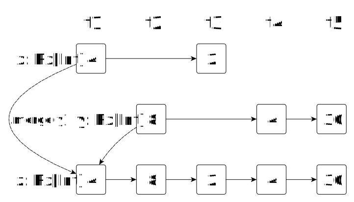
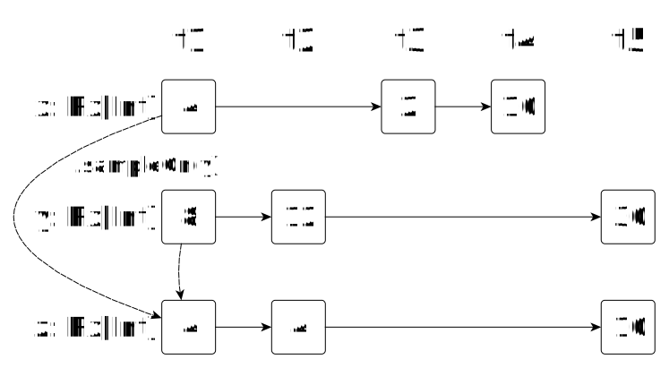

What is a web application?

Sébastien Doeraene
Julien Richard-Foy
HEIG-VD – 2017
http://julienrf.github.io/2017/scalajs-with-play

GET https://google.com/maps?q=Yverdon&lang=frGET, POST, PUT, DELETE, …)google.com)/maps)q=Yverdon&lang=fr)Accept-Language: fr)ETag: 5d72cb4)

project/plugins.sbt:
addSbtPlugin("com.typesafe.play" % "sbt-plugin" % "2.5.14")build.sbt:
enablePlugins(PlayScala)$ sbt runGo to http://localhost:9000
Edit your code and reload the page in your browser

conf/routes:
GET /index.html counter.Counter.index()app/counter/Counter.scala
package counter
import play.api.mvc.{Action, Controller}
class Counter extends Controller {
def index = Action { request =>
Ok("Hello, world!")
}
}Action object
Action { request => Ok }Action(parse.json) { request => Ok((request.body \ "message").get) }Action { request =>
request.method // e.g. "GET"
request.uri // e.g. "/index.html"
request.headers
request.acceptedTypes // e.g. Seq("text/html")
request.body // the request entity
Ok
}Ok // empty response with status code 200 (OK)
NotFound // empty response with status code 404 (Not Found)
// etc.Ok("Hello, world!")
Created(Json.obj("id" -> 123)) Ok("<h1>Hello, world!</h1>").withHeader("Content-Type" -> "application/json")
Ok("Salut").withHeader("Content-Language" -> "fr")
}Action { request =>
val data = myDatabase.requestSomething()
Ok(Json.toJson(data))
}trait MyDatabase {
def requestSomething(): Something
}Action.async { request =>
for {
data <- myDatabase.requestSomething()
} yield Ok(Json.toJson(data))
}trait MyDatabase {
def requestSomething(): Future[Something]
}import scala.concurrent.Future
import play.api.libs.concurrent.Execution.Implicits.defaultContext
Future {
1 + 1
}.map { x =>
x * 2
}.flatMap { x =>
Future {
0
}.zip(Future {
1
}).map { case (y, z) =>
x + y + z
}
}Future {
println("foo")
}.zip(Future {
println("bar")
}).map { _ =>
println("baz")
}
println("quux")What does this program print?
Action { request =>
Ok.withCookies(Cookie("preferred-color", "orange"))
}def selectLanguage(lang: Lang) =
Action { request =>
Ok.withLang(lang)
}def authenticate(name: String, password: String) =
Action { implicit request =>
if (name == "Julien" && password == "foo)
Redirect("/index.html").addingToSession("role" -> "admin")
else
BadRequest("Unknown user")
}def authenticatedAction = Action { request =>
if (request.session.get("role").contains("admin")) {
…
} else Unauthorized
}Can a client pretend to be an admin just by forging a fake session?
No, because the content of the session is cryptographically signed with a private key
conf/application.conf
play.application.loader = "counter.Loader"app/counter/Loader.scala
package counter
import play.api.{Application, ApplicationLoader, BuiltInComponentsFromContext}
import router.Routes
class Loader extends ApplicationLoader {
def load(context: ApplicationLoader.Context): Application = {
val components = new BuiltInComponentsFromContext(context) {
val counterController = new Counter
val router = new Routes(httpErrorHandler, counterController)
}
components.application
}
}build.sbt
libraryDependencies += "org.scalatestplus.play" %% "scalatestplus-play" % "1.5.1" % Testtest/counter/CounterSpec.scala
package counter
import org.scalatestplus.play.{OneServerPerSuite, PlaySpec}
import play.api.{Application, ApplicationLoader, Environment}
trait CounterSpec extends PlaySpec with OneServerPerSuite {
override lazy val app: Application =
(new Loader).load(ApplicationLoader.createContext(Environment.simple()))
}package counter
import play.api.test.FakeRequest
import play.api.test.Helpers._
class CounterCtlTest extends CounterSpec {
"test index page" in {
val response = route(app, FakeRequest("GET", "/greet")).value
assert(status(response) === OK)
assert(contentAsString(response) === "Hello, world!")
}
}package counter
import org.scalatestplus.play.{ChromeFactory, OneBrowserPerSuite}
class CounterUiTest
extends CounterSpec
with OneBrowserPerSuite
with ChromeFactory {
System.setProperty("webdriver.chrome.driver", "/home/julien/chromedriver")
// …
}"increment" in {
go to s"http://localhost:$port${routes.CounterCtl.index().url}"
eventually(id("counter").element)
val counterElem = id("counter").element
assert(counterElem.text == "0")
click on id("inc")
eventually(assert(counterElem.text == "1"))
}
npm install source-map-support in your project directorypackage hello
import scala.scalajs.js
object Main extends js.JSApp {
def main(): Unit = {
println("Hello world")
}
}project/plugins.sbt:
addSbtPlugin("org.scala-js" % "sbt-scalajs" % "0.6.16")build.sbt:
enablePlugins(ScalaJSPlugin)
// There is a main JSApp in this Scala.js project
scalaJSUseMainModuleInitializer := true$ sbt
...
> run
[info] Compiling 1 Scala source to .../target/scala-2.11/classes...
[info] Fast optimizing .../target/scala-2.11/standaloneclient-fastopt.js
[info] Running hello.Main
Hello world
[success] Total time: 3 s, completed May 15, 2017 2:58:22 PM> fastOptJS
...<html>
<head>
<title>Hello world</title>
<meta charset="utf-8" />
</head>
<body>
<script src="./target/scala-2.11/standaloneclient-fastopt.js"
type="text/javascript"></script>
</body>
</html>build.sbt:
libraryDependencies ++= Seq(
"org.scala-js" %%% "scalajs-dom" % "0.9.2"
)Main.scala:
import scala.scalajs.js
import org.scalajs.dom
object Main extends js.JSApp {
def main(): Unit = {
val p = dom.document.createElement("p")
p.innerHTML = "Hello world"
dom.document.body.appendChild(p)
}
}<div style="text-align: center">
<h1 id="counter">0</h1>
<p><input id="step" type="number" value="1" /></p>
<div>
<button id="inc">Increment</button>
<button id="reset">Reset</button>
</div>
</div>import scala.scalajs.js
import org.scalajs.dom
import org.scalajs.dom.html
object Main extends js.JSApp {
lazy val incButton =
dom.document.getElementById("inc").asInstanceOf[html.Button]
def main(): Unit = {
incButton.addEventListener("click", { (e: dom.MouseEvent) =>
dom.window.alert("The 'increment' button was clicked")
})
}
}object Main extends js.JSApp {
var counter: Int = 0
lazy val counterHeading =
dom.document.getElementById("counter").asInstanceOf[html.Heading]
lazy val incButton =
dom.document.getElementById("inc").asInstanceOf[html.Button]
def main(): Unit = {
incButton.addEventListener("click", { (e: dom.MouseEvent) =>
counter += 1
counterHeading.textContent = counter.toString()
})
}
}object Main extends js.JSApp {
var counter: Int = 0
lazy val counterHeading =
dom.document.getElementById("counter").asInstanceOf[html.Heading]
lazy val stepInput =
dom.document.getElementById("step").asInstanceOf[html.Input]
lazy val incButton =
dom.document.getElementById("inc").asInstanceOf[html.Button]
def main(): Unit = {
incButton.addEventListener("click", { (e: dom.MouseEvent) =>
val step = stepInput.value.toInt // value is a String
counter += step
counterHeading.textContent = counter.toString()
})
}
}object Main extends js.JSApp {
var counter: Int = 0
// ...
lazy val resetButton =
dom.document.getElementById("reset").asInstanceOf[html.Button]
def main(): Unit = {
incButton.addEventListener("click", { (e: dom.MouseEvent) =>
val step = stepInput.value.toInt // value is a String
counter += step
counterHeading.textContent = counter.toString()
})
resetButton.addEventListener("click", { (e: dom.MouseEvent) =>
counter = 0
counterHeading.textContent = counter.toString()
// ^ uh oh, this looks repetitive
})
}
}object Main extends js.JSApp {
var counter: Int = 0
// ...
def updateCounter(newCounter: Int): Unit = {
counter = newCounter
counterHeading.textContent = counter.toString()
}
def main(): Unit = {
incButton.addEventListener("click", { (e: dom.MouseEvent) =>
val step = stepInput.value.toInt // value is a String
updateCounter(counter + step)
})
resetButton.addEventListener("click", { (e: dom.MouseEvent) =>
updateCounter(0)
})
}
}<script
src="https://code.jquery.com/jquery-3.2.1.js"
integrity="sha256-DZAnKJ/6XZ9si04Hgrsxu/8s717jcIzLy3oi35EouyE="
crossorigin="anonymous"></script>object Main extends js.JSApp {
var counter: Int = 0
lazy val incButton = jQuery("#inc")
def main(): Unit = // ...
}[info] Compiling 1 Scala source to .../target/scala-2.11/classes...
[error] .../src/main/scala/hello/Main.scala:10: not found: value jQuery
[error] lazy val incButton = jQuery("#inc")
[error] ^
[error] one error foundjQuery!package hello
import scala.scalajs.js
import scala.scalajs.js.annotation._
@js.native
@JSGlobalScope
object JQueryGlobal extends js.Object {
def jQuery(selector: String): JQuery = js.native
}
@ScalaJSDefined // usually what you want for *traits*
trait JQuery extends js.Object {
// TODO
}import JQueryGlobal.jQuery
object Main extends js.JSApp {
var counter: Int = 0
lazy val incButton = jQuery("#inc")
def main(): Unit = // ...
}import JQueryGlobal.jQuery
object Main extends js.JSApp {
var counter: Int = 0
lazy val incButton = jQuery("#inc")
def main(): Unit = {
incButton.click { (e: JQueryEvent) =>
dom.window.alert("The 'increment' button was clicked")
}
}
}[error] .../src/main/scala/hello/Main.scala:15: value click is not a member of hello.JQuery
[error] incButton.click { (e: JQueryEvent) =>
[error] ^
[error] .../src/main/scala/hello/Main.scala:15: not found: type JQueryEvent
[error] incButton.click { (e: JQueryEvent) =>
[error] ^click and JQueryEvent!@ScalaJSDefined
trait JQuery extends js.Object {
def click(handler: JQueryEvent => Any): Unit
}
@js.native
@JSGlobal("jQuery.Event")
class JQueryEvent(name: String) extends js.Object {
}import JQueryGlobal.jQuery
object Main extends js.JSApp {
var counter: Int = 0
lazy val incButton = jQuery("#inc")
def main(): Unit = {
incButton.click { (e: JQueryEvent) =>
dom.window.alert("The 'increment' button was clicked")
}
}
}Now compiles, but at run-time …
TypeError: (intermediate value).apply is not a function@ScalaJSDefined
trait JQuery extends js.Object {
def click(handler: JQueryEvent => Any): Unit
}JQueryEvent => Any is a Scala function, and that is not compatible with JavaScript functions.@ScalaJSDefined
trait JQuery extends js.Object {
def click(handler: js.Function1[JQueryEvent, Any]): Unit
}Yeah! It works again (finally …)
def main(): Unit = {
incButton.click { (e: JQueryEvent) =>
dom.window.alert("The 'increment' button was clicked")
}
}click method| Scala types | JavaScript types |
|---|---|
Boolean |
boolean |
Int |
whole number in [-2^31, 2^31) |
Double |
number |
String |
string (or null) |
Unit |
undefined |
Null |
null |
js.FunctionN[-T1, ..., -TN, +R] |
function values (similar to (T1, ..., TN) => R) |
js.Array[A] |
Array with elements of type A |
js.Dictionary[A] |
object acting as a map of Strings to As |
js.UndefOr[+A] |
a value of type A or undefined (similar to Option[+A]) |
Reference: JavaScript types in Scala.js
var, val and def without () model fields (aka properties)@JSGlobal object ... for top-level, global objects (e.g., the Math object)
Int | String can be used to model a value of type Int or String (or any other pair of types)
import scala.scalajs.js.|Reference: Writing facade types in Scala.js
def updateCounter(newCounter: Int): Unit = {
counter = newCounter
counterHeading.html(counter.toString())
}
def main(): Unit = {
incButton.click { (e: JQueryEvent) =>
val step = stepInput.value().toInt
updateCounter(counter + step)
}
resetButton.click { (e: JQueryEvent) =>
updateCounter(0)
}
}html and value @ScalaJSDefined
trait JQuery extends js.Object {
def click(handler: js.Function1[JQueryEvent, Any]): Unit
def html(): String
def html(v: String): this.type
@JSName("val") def value(): String
@JSName("val") def value(v: String): this.type
}No! A lot of Scala.js libraries are published, defining facades for you.
(there are even 2 such libraries for jQuery)
monadic-htmlmonadic-htmlRx[A] Rx[A] is a value of type A that can change over time

Rx[A] using map Rx[A] into an Rx[B] using mapList.map, except we have to think about it in terms of timeRx[A] using map (2)val x: Rx[Int] = ???
val y = x.map(a => a * 2)
val z = y.map(a => a.toString)
dropIfList.filterNotval x: Rx[Int] = ???
val y = x.dropIf(a => a % 2 == 0)(1) // 1 is the default value

dropIf drops values satisfying a predicate, keepIf keeps only the values satisfying a predicateList.filterRxesRxes into one using mergeRxes (2)val x: Rx[Int] = ???
val y: Rx[Int] = ???
val z = x.merge(y)
Rx on every update of another Rx using sampleOnRx are seen as output, but only when there are updates on the second Rxval x: Rx[Int] = ???
val y: Rx[Int] = ???
val z = x.sampleOn(y)
There are several other operations documented here:
flatMapdropRepeatsproductRx, combine it with the latest value of another Rxdef zipLeft[A, B](x: Rx[A], y: Rx[B]): Rx[(A, B)] =
x.product(y).sampleOn(x)val x: Rx[Int] = ???
val y: Rx[Int] = ???
val z = zipLeft(x, y)
Rxes: Var[A]Var[A] is an Rx[A] that we can directly mutate, creating a source streamclass Var[A](initialValue: A) extends Rx[A] {
def :=(newValue: A): Unit
def update(f: A => A): Unit
}:= does not really “destroy” the old value; it adds a new value to the timeline.
Rxes: Var[A] (2)val x: Var[Int] = Var(4)
// later
x := 10
// even later
x.update(prev => prev / 5)
...creates the original Rx
Rxes, Vars and monadic-htmlRxesimport mhtml._
import scala.xml.Node
import org.scalajs.dom
val count = Var(0)
val component =
<div>
<p>{ count }</p>
<button onclick={ () =>
count.update(prev => prev + 1)
}>Increment</button>
</div>
val div = dom.document.createElement("div")
mount(div, component)object Main extends js.JSApp {
val counter = Var(0)
var step: Int = 1
def main(): Unit = {
val content =
<div>
<h1>{ counter } (twice is { counter.map(c => c * 2) })</h1>
<p><input type="number" value="1" onchange={ (e: dom.Event) =>
step = e.target.asInstanceOf[html.Input].value.toInt
} /></p>
<div>
<button onclick={ () =>
counter.update(prev => prev + step)
}>Increment</button>
<button onclick={ () =>
counter := 0
}>Reset</button>
</div>
</div>
mount(dom.document.getElementById("main"), content)
}
}var, is typically badVars to keep track of stateVar for 1 :=/update”Vars updated on every relevant DOM eventval step = Var(1)
val incrementClicks = Var(())
val resetClicks = Var(())
// ...
val content =
<div>
<h1>{ counter }</h1>
<p><input type="number" value="1" onchange={ (e: dom.Event) =>
step := e.target.asInstanceOf[html.Input].value.toInt
} /></p>
<div>
<button onclick={ () => incrementClicks := () }>Increment</button>
<button onclick={ () => resetClicks := () }>Reset</button>
</div>
</div>sealed abstract class Operation
final case class IncrementStep(step: Int) extends Operation
case object Reset extends Operation
val incrementOps = zipLeft(incrementClicks, step).map {
case (click, step) => IncrementStep(step)
}
val resetOps = resetClicks.map(_ => Reset)
val allOperations: Rx[Operation] = incrementOps.merge(resetOps)Rx.foldp is similar to List.foldLeftval counter = allOperations.foldp(0) { (prev, op) =>
op match {
case IncrementStep(step) => prev + step
case Reset => 0
}
}Yes and no.
java.lang.Thread, no java.io.File, etc.)Await.result)%%%)import scala.concurrent._
import scala.concurrent.ExecutionContext.Implicits.global
val f = Future { 42 }
val g = f.map(x => x / 2)
val h = g.map(x => x + 6)
h.onComplete(println)Basically just like in Scala/JVM, except …
import scala.concurrent._
import scala.concurrent.ExecutionContext.Implicits.global
val f: Future[Int]
val x = Await.result(f)...
[error] Referring to non-existent method scala.concurrent.impl.Promise$CompletionLatch.releaseShared(scala.Int)scala.Boolean
[error] called from scala.concurrent.impl.Promise$CompletionLatch.apply(scala.util.Try)scala.Unit
[error] called from scala.concurrent.impl.Promise$CompletionLatch.apply(java.lang.Object)java.lang.Object
[error] called from scala.util.Success.$$anonfun$3(scala.Function1)java.lang.Object
[error] called from scala.util.Success.map(scala.Function1)scala.util.Try
...In general, blocking APIs do not exist at all in JavaScript environments.
Reference: comprehensive listing of semantic differences
ClassCastExceptions, ArrayIndexOutOfBoundsExceptions, etc.val a = new Array[Int](5)
println(a(10))JVM:
java.lang.ArrayIndexOutOfBoundsException: 10Scala.js:
scala.scalajs.runtime.UndefinedBehaviorError: An undefined behavior was detected: 10Demons could fly out of your nose (although in “dev” mode aka fastOptJS, most UBs are checked and reported as UndefinedBehaviorError)
Useful links
project/plugins.sbt:
// Play dependencies and hot reloading
addSbtPlugin("com.typesafe.play" % "sbt-plugin" % "2.5.14")
// Scala.js
addSbtPlugin("org.scala-js" % "sbt-scalajs" % "0.6.16")
// Scala.js integration with Play
addSbtPlugin("com.vmunier" % "sbt-web-scalajs" % "1.0.4")build.sbt:
val shared =
crossProject
.crossType(CrossType.Pure)
.settings(…)
val sharedJS = shared.js
val sharedJVM = shared.jvmbuild.sbt:
val client =
project
.dependsOn(sharedJS)
.enablePlugins(ScalaJSPlugin, ScalaJSWeb)
.settings(…)build.sbt:
val server =
project
.dependsOn(sharedJVM)
.enablePlugins(PlayScala)
.settings(
scalaJSProjects := Seq(client),
pipelineStages in Assets := Seq(scalaJSPipeline),
…
)conf/routes:
POST /inc counter.CounterCtl.incrementapp/counter/CounterCtl:
val increment = Action(parse.json) { request =>
request.body.validate[Int]
.fold(
_ => BadRequest,
step => Ok(Json.toJson(Service.increment(step)))
)
}val counter = Var(0)
def onIncrement(): Unit =
dom.ext.Ajax.post(
url = "/inc",
data = JSON.stringify(1),
headers = Map("Content-Type" -> "application/json")
).foreach { xhr =>
if (xhr.status == 200) {
val x = JSON.parse(xhr.responseText).asInstanceOf[Int]
counter := x
}
}
<div style="text-align: center">
<h1>{ counter }</h1>
<button id="inc" onclick={ onIncrement _ }>Increment</button>
</div>build.sbt:
val shared =
crossProject
.crossType(CrossType.Pure)
.settings(
libraryDependencies ++= Seq(
"com.lihaoyi" %%% "autowire" % "0.2.6",
"io.suzaku" %%% "boopickle" % "1.2.6"
)
)counter/ServiceDef.scala:
trait ServiceDef {
def get(): Int
def increment(step: Int): Int
def reset(): Int
}app/counter/Service.scala:
import scala.concurrent.stm.Ref
object Service extends ServiceDef {
private val value = Ref(0)
def get(): Int = value.single.get
def increment(step: Int): Int = value.single.transformAndGet(_ + step)
def reset(): Int = value.single.transformAndGet(_ => 0)
}app/counter/Server.scala:
import boopickle.Default._
object Server extends autowire.Server[ByteBuffer, Pickler, Pickler] {
override def read[R: Pickler](p: ByteBuffer) = Unpickle[R].fromBytes(p)
override def write[R: Pickler](r: R) = Pickle.intoBytes(r)
val routes: Server.Router = route[ServiceDef](Service)
}conf/routes:
POST /service/*path counter.CounterCtl.service(path)app/counter/CounterCtl.scala:
def service(path: String) = Action.async(parse.raw) { request =>
// get the request body as ByteString
val b = request.body.asBytes(parse.UNLIMITED).get
// call Autowire route
Server.routes(
autowire.Core.Request(path.split("/"),
Unpickle[Map[String, ByteBuffer]].fromBytes(b.asByteBuffer))
).map { buffer =>
val data = Array.ofDim[Byte](buffer.remaining())
buffer.get(data)
Ok(data)
}
}counter/Client.scala:
import boopickle.Default._
object Client extends autowire.Client[ByteBuffer, Pickler, Pickler] {
override def doCall(req: Request): Future[ByteBuffer] = {
dom.ext.Ajax.post(
url = "/service/" + req.path.mkString("/"),
data = Pickle.intoBytes(req.args),
responseType = "arraybuffer",
headers = Map("Content-Type" -> "application/octet-stream")
).map { r =>
TypedArrayBuffer.wrap(r.response.asInstanceOf[ArrayBuffer])
}
}
override def read[Result: Pickler](p: ByteBuffer) = Unpickle[Result].fromBytes(p)
override def write[Result: Pickler](r: Result) = Pickle.intoBytes(r)
}counter/Main.scala:
val client = Client[ServiceDef]
val eventuallyInitValue = client.get().call()counter/Main.scala:
val client = Client[ServiceDef]
val eventuallyInitValue: Future[Int] = client.get().call()val counter = Var(initValue)
var step = 1
def onIncrement(): Unit =
client.increment(step).call().foreach(x => counter := x)
def onReset(): Unit =
client.reset().call().foreach(x => counter := x)
def onChangeStep(event: Event): Unit = {
step = event.target.asInstanceOf[Input].value.toInt
}
<div style="text-align: center">
<h1 id="counter">{ counter }</h1>
<h1><input type="number" value={ step.toString } onchange={ onChangeStep _ } /></h1>
<div>
<button id="inc" onclick={ onIncrement _ }>Increment</button>
<button id="reset" onclick={ onReset _ }>Reset</button>
</div>
</div>sbt-web-scalajsautowireboopickleAdd dependencies on NPM packages to your build.sbt
npmDependencies in Compile += "react" -> "15.5.4"> myProject/fullOptJS::webpackdef max[A](a1: A, a2: A, ordering: Ordering[A]): A =
if (ordering.compare(a1, a2) > 0) a1 else a2max(1, 2, Ordering.int) // 2
max("aaa", "bbb", Ordering.string) // "bbb"object Ordering {
object int extends Ordering[Int] { … }
object string extends Ordering[String] { … }
}def max[A](a1: A, a2: A)(implicit ordering: Ordering[A]): A =
if (ordering.compare(a1, a2) > 0) a1 else a2max(1, 2) // 2
max("aaa", "bbb") // "bbb"def max[A](a1: A, a2: A)(implicit ordering: Ordering[A]): A =
if (ordering.compare(a1, a2) > 0) a1 else a2max(1, 2) // 2
max("aaa", "bbb") // "bbb"object Ordering {
implicit object int extends Ordering[Int] { … }
implicit object string extends Ordering[String] { … }
}